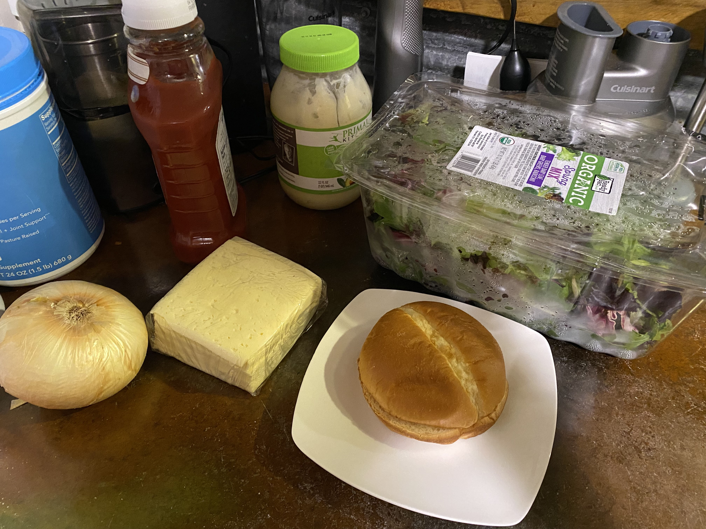
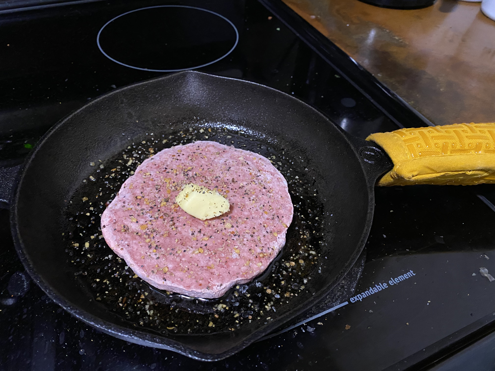
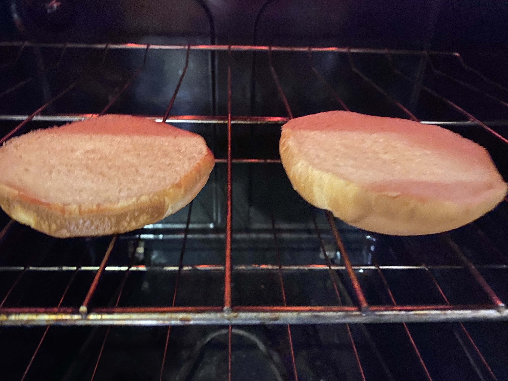
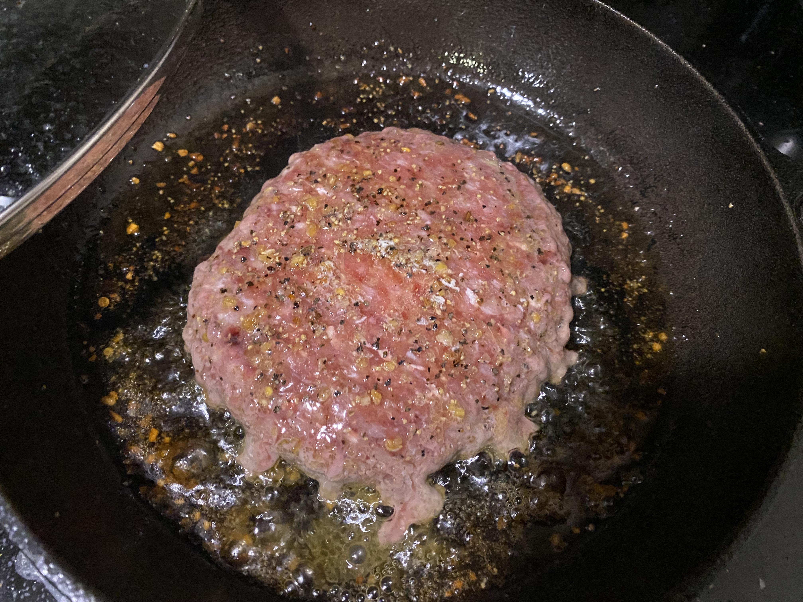
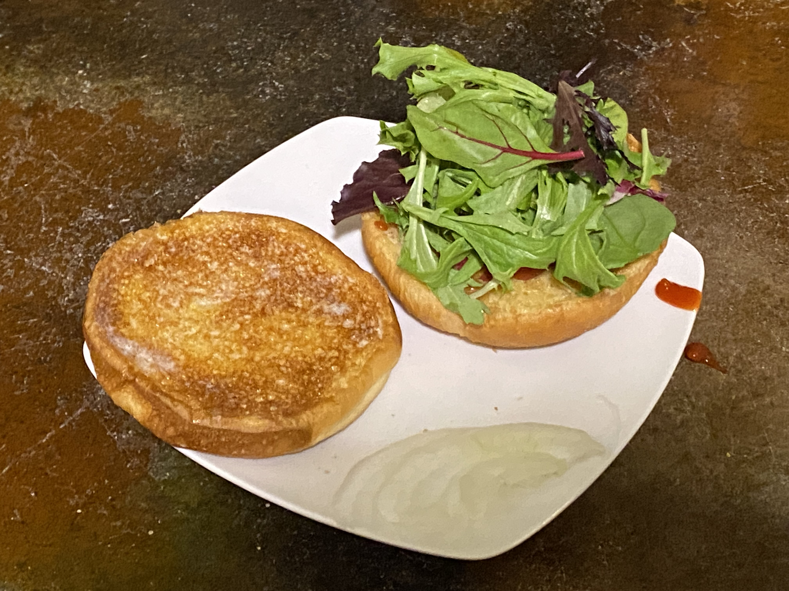

This is the best burger ever.
Prep time: 10 mins
Cook time: 10 mins
Total time: 20 mins
Get all your ingredients out and ready.
Heat a skillet to medium heat. Drizzle cooking oil and seasoning on the pan. Place the burger meat in the middle. Top with butter and seasoning. Cover.
Cut your tomato and onion, and toast your buns. Spread mayo on the buns after toasting. Place the spinach on the top bun and pickles on the bottom bun.
Flip burger patty when it starts bleeding. Then place cheese on the patty and cover. Once cheese melts, uncover and wait 5-7 mins. Turn off stove and place burger on the pickles.
Place onion and tomato slices on the burger. Carefully flip the top bun onto the tomatoes.
Wait 1-2 mins before serving. Enjoy!
